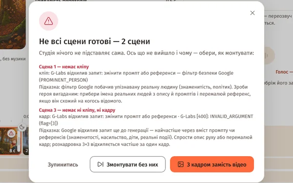
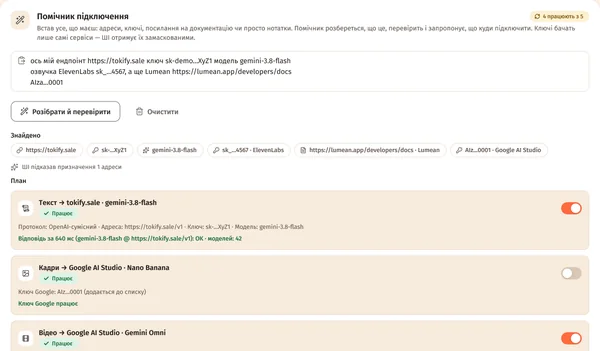
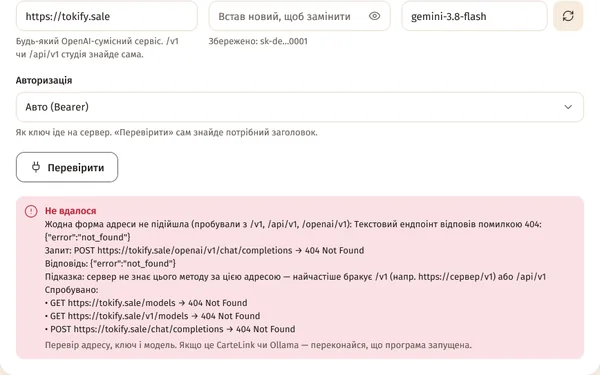
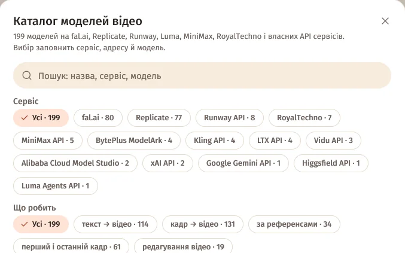
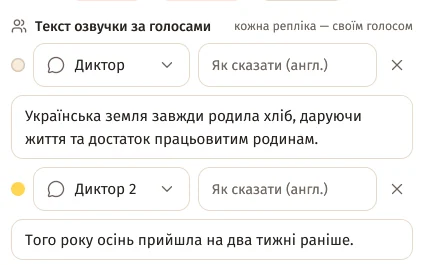
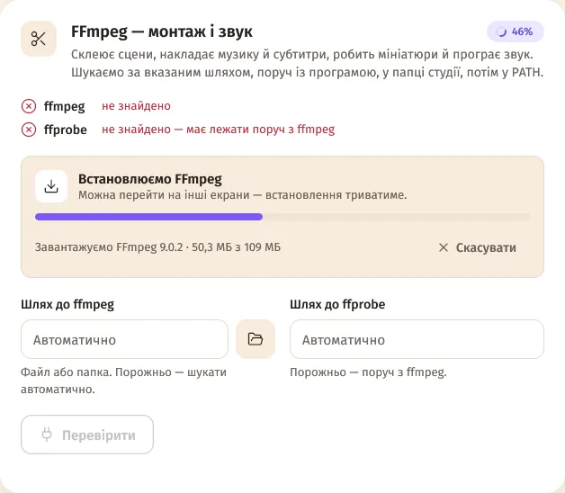

Як оновитися
- У меню студії ліворуч натисни «Оновлення» (крапка біля нього — є нова версія).
- «Завантажити й встановити» — студія сама завантажить нову версію й звірить контрольну суму.
- «Перезапустити зараз». Якщо щось генерується, студія спершу перепитає.
Проєкти, ключі й налаштування лишаються на місці — вони лежать окремо від програми. Ще не маєш студії — завантаж її тут.
Версія 2.0.3 поки вийшла для Windows. Для Mac найновіша збірка — 2.0.2, її дає кнопка «Завантажити».
Повний перелік змін — в історії версій і в нотатках до релізу 2.0.3.
Нове в 2.0.3 — як користуватися

Невдалі сцени і точні помилки
Перед монтажем — список невдалих сцен з точною помилкою й вибір: без них, з кадром замість відео чи зупинитись.
Як користуватися
Помічник підключення
Встав адреси, ключі й посилання як є — студія розбереться, що куди, перевірить і налаштує.
Як користуватися
Підключення будь-якого сервісу
Текст без /v1, Anthropic, Ollama, Azure, вибір авторизації, власний сервер озвучки й Lumean.
Як користуватися
Каталоги моделей
199 моделей відео, 188 — кадрів, 144 — озвучка, 36 текстових сервісів: пошук, фільтри, вибір в один клік.
Як користуватися
Мультиголос
Диктор, Диктор 2 і 3 та свій голос кожному героєві; субтитри кольором мовця.
Як користуватисяІ ще в 2.0.3
- Telegram-бот — список невдалих сцен із кнопками рішення. Докладніше.
- Lumean — новий сервіс озвучки (ключ із пресетом full). Як підключити.
- Розпізнавання мови через «Своє API» і будь-яка озвучка через «Власний сервер» — з шаблонами. Докладніше.
- Кліпи не обрізає в кінці — довжина враховує переходи й реальний темп мови. Докладніше.
- Озвучка довша за кліп — кліп позначається «перезняти?». Докладніше.
- Omni Flash через G-Labs — якщо сцену відхилили, ще одна спроба лише з кадром. Докладніше.
- «Повторити» — одна назва замість «Зняти ще раз», «Озвучити ще раз» і «Спробувати ще раз».
- Ключі Google AI Studio
AQ.…— з версії 2.0.2. Докладніше.
Розділи версії 2.0.1

Голос у відео і режими
Герої говорять прямо в кадрі, фільми без людей і моушн-графіка з анімованими заголовками й числами.
Як користуватися
Перезняти за прикладом
Посилання на YouTube + твоє побажання — Gemini розбирає відео, студія робить новий фільм за зразком.
Як користуватися
Мікрофон
Говориш — текст з'являється в «Новій історії». Шість хмарних сервісів або whisper.cpp без інтернету.
Як користуватися
Telegram-бот
Новий проєкт текстом чи голосовим, черга, прогрес наживо й готове відео — з телефона.
Як користуватися
Експорт у редактори
DaVinci Resolve, Premiere Pro, Final Cut Pro, CapCut, Kdenlive, Shotcut, OpenTimelineIO.
Як користуватися
Своє API, RoyalTechno і Google
Будь-який сервіс кадрів і відео за описом JSON або з документації, пресет RoyalTechno, Gemini Omni Flash.
Як користуватися
Озвучка й ключі
Свої ключі в кожного сервісу, ключі пачкою, голос за ID, AssemblyAI і що змінюється в ElevenLabs.
Як користуватися
Перенесення налаштувань
Усі ключі, підключення й профілі одним зашифрованим файлом — на інший комп'ютер чи як резервна копія.
Як користуватисяІ ще в 2.0.1
FFmpeg одним кліком
Немає FFmpeg — на Головній з'явиться картка «Не знайдено FFmpeg», а в «Налаштування → FFmpeg — монтаж і звук» — «Встановити автоматично». Студія завантажить офіційну збірку FFmpeg 9.0.2 (Windows — збірка Gyan, ~109 МБ; Mac — Homebrew, а без нього — збірки martin-riedl.de), звірить контрольну суму й поставить у свою папку без прав адміністратора. «Відновити» перевіряє файли й за потреби завантажує їх знову; «Встановити вручну» — команди для winget, scoop і brew.

До 20 сцен одночасно
«Сцен одночасно» тепер іде до межі твого сервісу відео: G-Labs — до 10, Google — до 4 (+2 за кожен додатковий ключ), RoyalTechno, fal.ai, Replicate — до 20. Вище рекомендованого студія попередить. Уся таблиця.
Гучність −14 LUFS
YouTube, TikTok, Instagram і більшість програвачів вирівнюють звук приблизно до −14 LUFS, тож тихий фільм звучав би тихіше за сусідні відео. Тепер готовий фільм сам вирівнюється до −14 LUFS із запасом піків −1,5 дБ — без компресії. Нічого вмикати не треба.
Одна копія студії
Якщо студія вже відкрита, друга не запуститься — Windows покаже «YT Cartell Studio уже відкрита — переключись на її вікно». Так дві копії не перезаписують налаштування одна одної.
G-Labs надійніше
- Запит, який G-Labs відхилив через зміст (фільтр безпеки, недопустимі референси), більше не повторюється без змін — зміни промт чи референси.
- Задачі, яких студія більше не чекає (скасування, тайм-аут), вона зупиняє в G-Labs.
- Omni Flash знімає кліпи на 4 і 6 секунд і без Google AI Ultra.
Каталоги
71 стиль у 6 категоріях і 36 жанрів та ніш (було 67 і 32). Переходи, ефекти руху, фільтри й стилі субтитрів — без змін: 23, 12, 15 і 8.